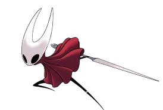
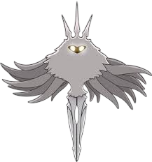
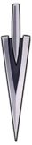
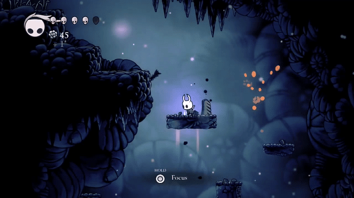

Bem-vindo a Hallownest
Um reino subterrâneo em ruínas. Um pequeno cavaleiro silencioso. Uma jornada cheia de desafios, segredos e uma história profunda que se revela aos poucos.
Prepare-se para explorar, lutar e se apaixonar por um dos melhores Metroidvanias já feitos.
O Reino Caído
Hallownest já foi uma civilização grandiosa. Hoje, restam apenas ruínas tomadas por uma infecção misteriosa. Você controla o Hollow Knight, um pequeno ser sem nome que desce às profundezas para desvendar o que restou desse mundo esquecido.
Gameplay
Um Metroidvania puro e refinado. Explore um mapa vasto e interconectado, desbloqueie novas habilidades, enfrente combates precisos e descubra segredos escondidos em cada canto sombrio de Hallownest.
Exploração
Cada habilidade nova abre caminhos antes impossíveis. Hallownest recompensa a curiosidade — e pune a imprudência. Volte às áreas antigas, encontre atalhos e desvende os mistérios que elas guardam.
Arte e Trilha Sonora
Visual 2D desenhado à mão com uma atmosfera melancólica e belíssima. A trilha sonora de Christopher Larkin é simplesmente perfeita, transformando cada momento em algo memorável.
Legado
Um dos maiores jogos indie de todos os tempos. Sem grind, sem microtransações, apenas gameplay excelente e uma comunidade apaixonada. Agora o mundo espera ansiosamente por Hollow Knight: Silksong.
🧠 Mergulho Profundo em Hallownest
História e Narrativa
Uma infecção sombria devorou Hallownest de dentro para fora. O Cavaleiro é uma das últimas vasilhas criadas para conter esse mal — e talvez a única com chance de acabar com ele de vez.
Ao longo da jornada, você cruza o caminho de figuras marcantes:

Guerreira ágil, protetora feroz e guardiã de muitos segredos de Hallownest.

A entidade luminosa e esquecida, origem da infecção que consumiu Hallownest.

O antigo soberano que tentou salvar seu reino a qualquer preço.
🕹️ Como se Joga
Combate preciso, exploração viciante e mecânicas profundas. Hollow Knight equilibra perfeitamente desafio, descoberta e sensação de progresso.
⚔️ Combate
Direto, exigente e extremamente satisfatório. O Cavaleiro luta com seu ferrão (Nail), uma lâmina curta que exige aproximação, timing e reflexos afiados.

Falso Cavaleiro

Lords Louva-Deus

Hornet da Borda
🗡️ O Ferrão
Começa simples, mas evolui através de upgrades poderosos. Do Ferrão Velho ao Ferrão Puro, cada estágio aumenta alcance e dano.
Ferrão Velho
Dano: 5
Ferrão Afiado
Dano: 9
Ferrão Canalizado
Dano: 13

Ferrão Serpenteado
Dano: 17
Ferrão Puro
Dano: 21
🧙♀️ Feitiços
Usando a energia da Soul, o Cavaleiro pode lançar ataques mágicos devastadores:
Espírito Vingativo
-Photoroom.png)
(projétil)
Mergulho Desolado
-Photoroom.png)
(ataque vertical)
Espectros Uivantes
-Photoroom.png)
(explosão acima do personagem)
💠 Soul – A Energia da Vida
A cada golpe certeiro, você coleta Soul. Essa energia pode ser usada para se curar ou para lançar feitiços. Saber quando curar e quando atacar é parte essencial da sobrevivência em Hallownest.
Cura (Focus)

O jogador pode gastar Soul para se curar. Isso exige um momento de vulnerabilidade, já que o Cavaleiro precisa ficar parado canalizando energia.
Feitiços

Soul também pode ser usada para ataques mágicos, o que força o jogador a decidir entre atacar ou se curar.
🪬Charms (Amuletos)
Os amuletos permitem personalizar completamente seu estilo de jogo. Equilibre velocidade, poder, defesa e utilidade dentro do limite de notches.
Corte rápido

Aumenta a velocidade dos ataques
Pedra Xamã

Aumenta o poder dos feitiços
Canção de larva
Ganha Soul ao receber dano
Força Inquebrável

Aumenta bastante o dano do Nail

Cada charm tem um custo em notches (espaços de amuleto). Gerenciar quais charms usar dentro do limite de notches é uma parte estratégica do gameplay.
🌀 Habilidades de Movimento
Dash, pulo duplo, voo curto, nado em ácido… Cada nova habilidade transforma o mundo ao seu redor e revela partes de Hallownest que antes eram inacessíveis.
Manto de Asa de Mariposa

Dash para esquiva e acesso a novas áreas.
Coração de Cristal

Um impulso rápido em linha reta.
Asas do Monarca

Pulo duplo.
Lágrima de Isma

Permite nadar em água ácida.
Com essas habilidades, o jogador pode revisitar áreas anteriores para explorar novos caminhos, o que é um pilar do gênero Metroidvania.
🎯 Plataforma e Precisão
Hollow Knight não exige apenas bons reflexos no combate. Os desafios de plataforma são brutais — especialmente no famoso Path of Pain.
Path of Pain
(Caminho da Dor)


🧪 Progressão e Risco
Explore, melhore seu ferrão, colete Geo e use bancos para salvar o progresso. Mas cuidado: ao morrer, você deixa uma sombra (Shade). Recuperá-la é essencial — ou perderá seu Geo para sempre.
Geo

A moeda do jogo, obtida ao derrotar inimigos, usada para comprar mapas, itens e melhorias.
Bancos

Servem como pontos de descanso (e salvamento).
Sistema de morte

Ao morrer, o Cavaleiro deixa um Shade (sombra). É preciso derrotá-lo para recuperar sua Soul máxima e o Geo perdido. Se morrer antes de recuperá-lo, os Geo se perdem para sempre.